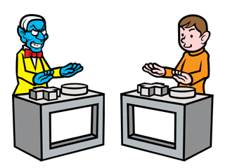
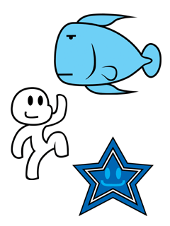
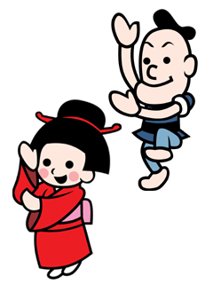
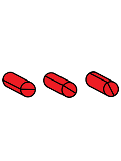
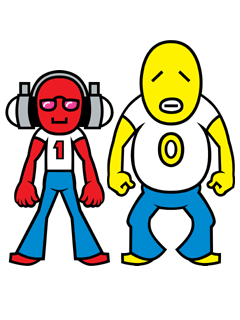

 |
とある古い本によると、
人の悩みをエネルギーにして成長する魔王が存在するという…
その魔王は現代にも生きながらえていて、
今もなお成長し続けているらしい。
現代社会には、その魔王にとって都合の良い場所があるそうだ。
それはクイズ番組の収録現場。
回答者の悩むエネルギーは意外と大きく、
魔王にとってはウハウハだ。
番組で司会者をよそおい、
回答者をアオりまくっているのはヤツだ…
気をつけろ！！ |
彼は、音楽が大好きで仕事も音楽関係ばかり。
プライベートでは、夜空を見ながら音楽を聴いたり、
散歩したりしているそうだ。
あまり多くを話したがらない彼だが、
いつも明るく言葉じりもやさしいカンジ。
イイ人かもネ～。
（写真はビリビリウオ、星といっしょに撮影） |
 |
 |
ノリノリでお習字をしていると
どこからかやってくるメルヘンな人々。
こちらがいまいちノリきれなくて、お習字をミスると
ズッコケて不満感をアピールする。
そんな彼らの世界にも権力者がいて、
その者の似顔絵を見せられると頭が上がらない。
封建社会からの脱却はまだのようだ。
|
工業製品らしい。
企業秘密とのことで、不明な点が多い。
爆発することから危険物ではないかと予想される。
「赤いモノ工場」の元作業者の方に聞いてみると、
製造工程ではリズミカルに作業をこなすことが
要求されるという。
リズミカルで爆発する製品。
いったいどんな目的でなんのために作られているのか、
今もナゾにつつまれている。
|
 |
 |
ラッパー。
親しみやすい内容の歌詞で
幅広い年齢層にファンをもつ２人組。
クールなラッピングと激アツの合いの手で
「静と動」に通じるものがありそうな
「クール＆ホット」を表現。
ラジオにも出演しており、
クールで軽快なトークがオンエアー中！
ただ、ラジオでのトークに合いの手は いらないので
相方はちょっとタイクツそう。 |
|